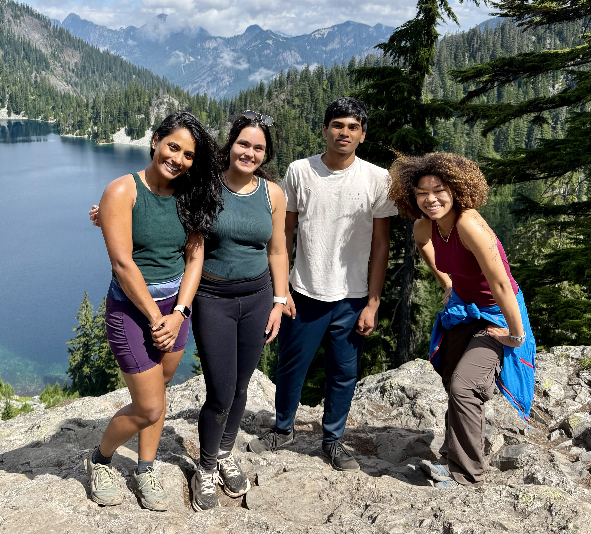

Hi, I’m Charan! I’m passionate about computer science, research, and using technology for social good. I enjoy building impactful projects and exploring the intersection of AI, data, and real-world problems.
